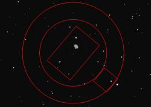

Version 3 alpha 0.0.6
This version add telescope control.
 Major improvement of this version is telescope control using INDI library for both Linux and Windows or the same plugins as the version 2.7 for Windows.
You can find more information about INDI at indi.sourceforge.net
{kind=link}
The eyepiece and camera marker have been improved. You can now use an offset from the field center to draw auto-guider CCD or off-axis guider field.
This mark are used to continuously show the telescope position but also to add finder anywhere on the chart.
 Planetary images
Planetary images
The planet are now represented by their real surface feature.
This option is available only for the Windows version at the moment and is not activated by default. Open the Solar System / Planets setting to activate.
Other change include:
- Rise / Set time display
- Button to switch the coordinates grid
- Button to change the number of visible objects
- DDE server for the Windows version
- Add command compatible with the previous version for DDE and TCP/IP
- Select the base common folder and a private folder for user data.
- A lot of bug correction …
- Probably many other thing I don't remember …
The Linux binaries are now also available as an easy to install RPM.
For a maximum of comfort you must also install the libborqt rpm available here.